从力学目标反推增材制造微结构：条件扩散怎样为数字孪生提供取向图
论文原文 ↗论文：Pablo Luna Falcon、Jason Mayeur、Amirkoushyar Ziabari、Vincent Paquit、Patxi Fernandez-Zelaia，Microstructural Generative Inverse Models for Additive Manufacturing Digital Twins，arXiv:2610.30404，2026。官方页面 ·
金属增材制造可以加工复杂零件，但同一种合金在不同热历史下会形成不同晶粒形状、取向和空间排列，机械表现也随之变化。要在计算机中预测零件性能，必须先给力学模型一份足够真实的微结构。常用重建工具从晶粒尺寸、形状和取向分布等统计量出发，逐个拼出晶粒；增材制造中复杂的带状织构、柱状晶和不规则区域，却很难仅靠几项统计量完整重建。
作者提出用条件扩散模型直接生成晶体取向图：既能采样类似增材制造组织的新图，也能按给定织构、形貌、工艺类别或力学目标生成。这些取向图是用于数字孪生的微结构表示，承接的是“工艺—组织—性能”链条中的组织环节。论文的重点是生成可信的组织分布，并展示从性质反推组织、从工艺生成组织，以及由组织变化估计性能分布的能力。
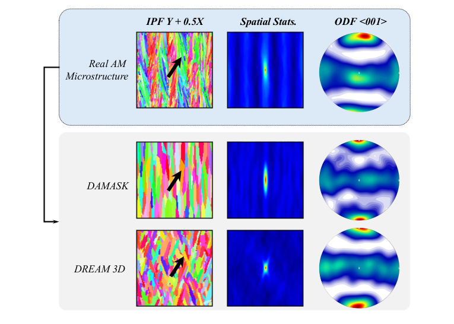
图1｜实际增材制造组织与统计重建结果。中列的空间相关和右列的织构展示了取向怎样分布；真实组织中的重复条带关系，是微结构生成需要保留的信息。
一、输入是什么：每个像素都有晶体取向，颜色只是显示方式
论文采用 exaCA 的增材制造合成组织数据。它由元胞自动机模拟得到，包含六组不同功率、速度和扫描间距所对应的三维组织。作者从这些大体积组织中裁取 1,500 个 64×64×64 小块，并做旋转增强；训练时从中抽取二维 XY 切片，再进行旋转和翻转。
每个像素的数值是三个 Bunge–Euler 角，用来说明该处晶体相对样品坐标系怎样旋转。模型实际处理的是 64×64×3 的取向数组。论文中的彩色图则是反极图着色，例如 IPF-Z 表示样品 Z 方向在晶体坐标中的取向；同色区域通常对应取向相近的晶粒。颜色不是化学组成或材料相标签。
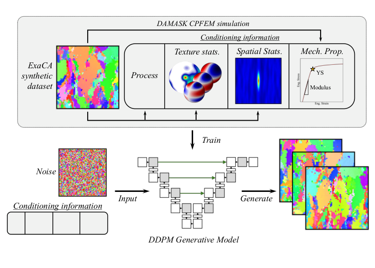
图2｜工作流。exaCA 组织提供训练图像，统计描述符、工艺和 DAMASK 力学计算提供条件；训练后的扩散模型从噪声生成新的取向图。
力学条件的来源尤其重要。作者用 DAMASK 晶体塑性计算对三维小块沿 Z 轴做单轴拉伸，从整体应力—应变响应提取弹性模量和初始屈服强度，再把这两个标签赋给该小块的 XY 切片。晶体塑性模型依据各晶粒的取向、滑移系和相互作用求出整体变形，因此织构与加载方向之间的物理联系进入了训练标签。
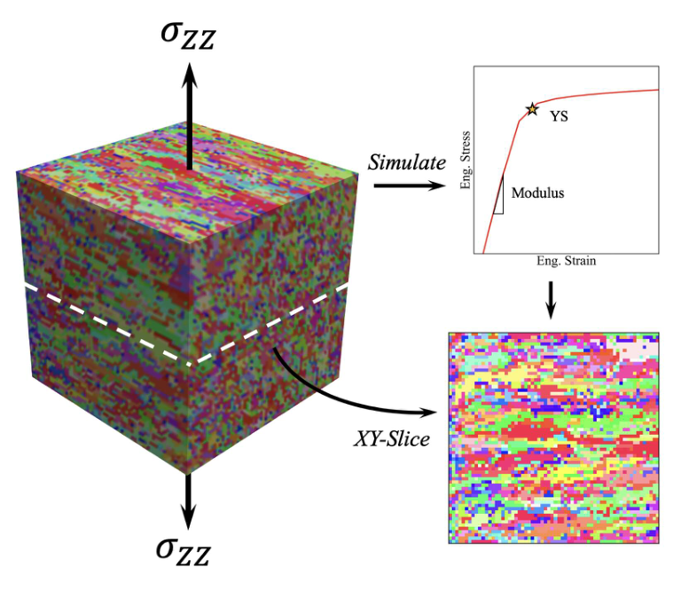
图3｜三维组织沿 Z 轴受拉后，得到整体弹性模量和屈服强度；这些性质作为二维 XY 取向图的条件标签。
二、怎样把形貌、织构和目标性质交给扩散模型
“织构”指不同晶体取向在整块材料中的统计分布，例如很多晶粒都让〈001〉方向接近加载轴。作者用广义球谐函数展开取向分布，可以把它理解为适合三维旋转空间的傅里叶展开：一组系数概括取向分布的主要模式。模型使用实部和虚部组成的 20 维向量。
形貌则用取向的两点自相关图表示：从任意像素出发，沿某个方向移动一定距离后，还处于相同或相近取向的概率有多高？柱状晶沿长轴保持同一取向的距离更长，因此相关图中心通常呈拉长形状；细小等轴晶的相关范围则更短、更圆。该表示同时能保留一些跨晶粒的重复空间关系。
工艺使用六维独热编码，分别指向数据中的六组工艺类别；性质使用模量与屈服强度两个数。这样，向量条件负责织构、工艺和性质，二维相关图负责形貌，研究者可以给出其中一项，也可以组合多项。
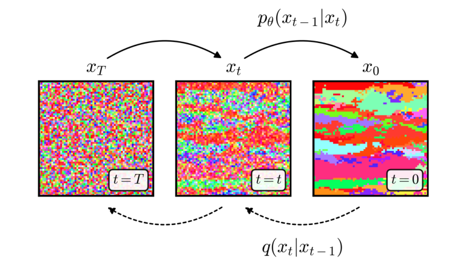
图4｜训练时逐步给取向数组加噪，生成时从噪声逐步恢复组织结构。
扩散训练先向真实取向图加入不同程度的高斯噪声，再让 U-Net 预测加进去的噪声。U-Net 是同时处理局部细节和较大空间结构的图像网络；它在每一步接收当前取向数组、去噪进度和条件信息。通过反复训练，网络学会从杂乱数值恢复晶粒及其取向关系。
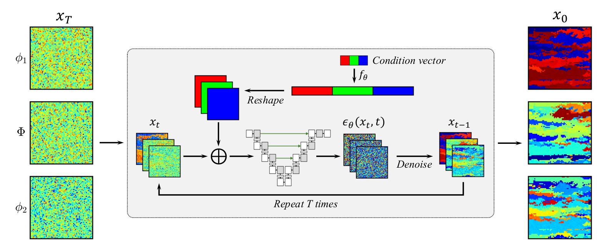
图5｜三个取向角作为三个通道输入 U-Net；网络结合条件，经过 1,000 个去噪步骤生成新的取向数组。
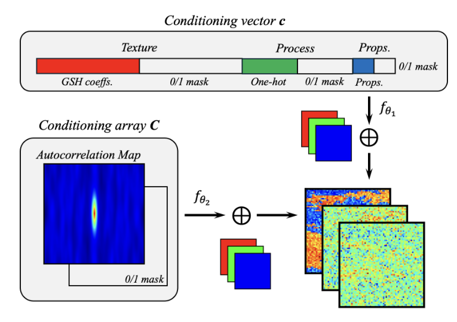
图6｜织构、工艺和性质进入条件向量，形貌进入相关图数组；0/1 掩码说明哪些条件已提供。
为让一个模型同时学会自由生成和条件生成，训练时会随机省略部分条件。生成时，程序分别求出有条件与无条件的噪声预测，再把两者差异按权重 w 放大，这就是无分类器引导。w 较小时探索更宽，w 较大时更强调目标。它控制的是采样偏向，不需要为每个新目标重新训练模型。
三、得到什么：从像真实组织，到按性质或工艺生成组织
1. 自由生成保留复杂组织，形貌和织构可以分别控制
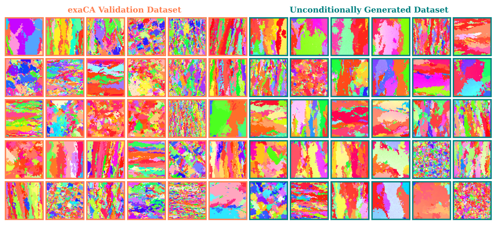
图7｜无条件生成的取向图与验证集对比。生成结果覆盖柱状、等轴、粗细晶粒与复杂条带等不同空间组织。
自由生成的样本同时出现清晰晶界、多种晶粒尺度和不同织构。模型随后接受形貌条件：给定等轴、水平柱状或垂直柱状的相关图，生成图保留相应形状，同时改变具体晶粒的位置和取向。这使同一统计目标可以产生多份不同组织，而不是重复一幅模板。
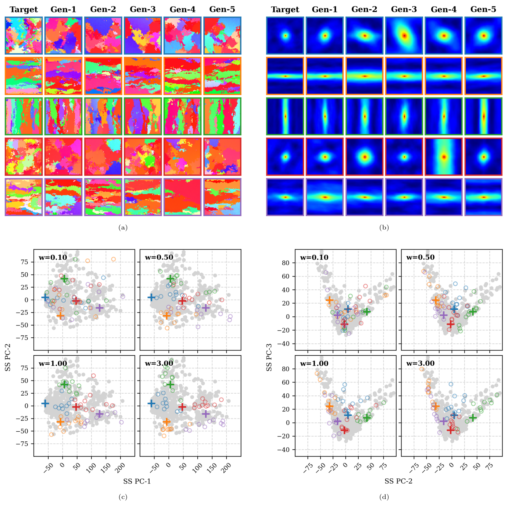
图8｜每行使用相同目标形貌生成多份组织。右上为对应相关图，下方比较生成样本与目标的空间统计位置。
织构条件则可以固定取向分布，同时保留晶粒排列的变化。极图把晶体方向投影出来，比单看彩色组织图更容易判断取向统计是否相符；生成图的极图与目标呈现相近分布。用主成分分析将织构系数投影到低维空间后，增加引导权重也会让生成点更集中在目标附近。
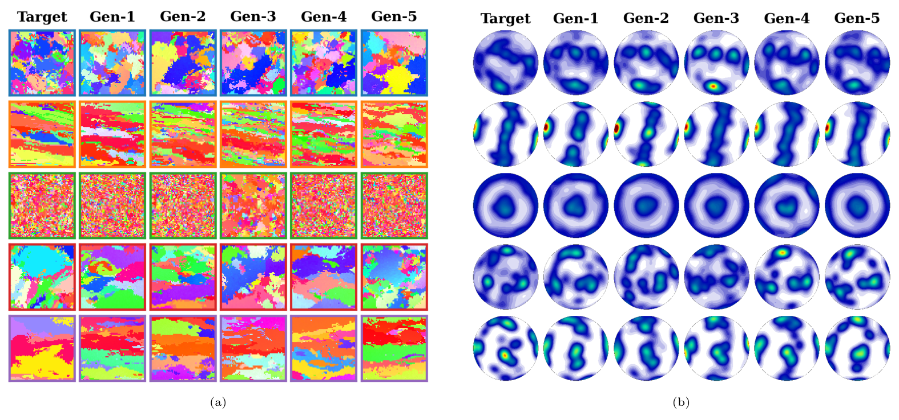
图10｜左侧比较组织图，右侧比较〈001〉极图；相同的织构目标可以对应多份空间排列不同的组织。
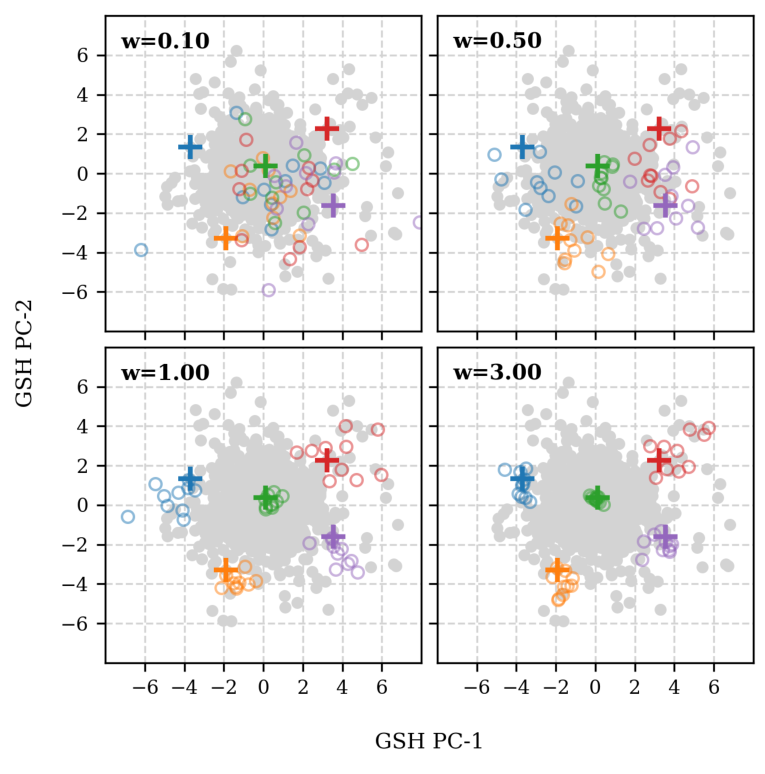
图11｜生成样本在织构系数主成分空间中的分布；十字为目标，圆圈为生成样本，较强引导使其更集中。
2. 力学目标反推出的组织，呈现明确的织构变化
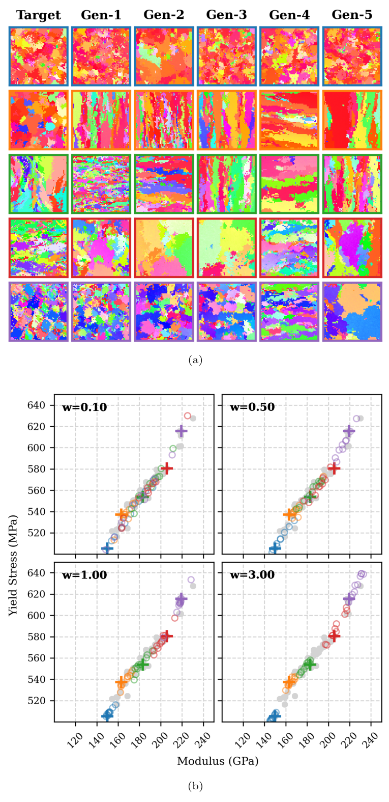
图9｜给定模量和屈服强度生成取向图。下方性质位置由结构—性质代理网络计算，比较生成样本与目标的对应关系。
作者选择五组不同模量与屈服强度目标，生成组织后发现：随目标性能提高，取向总体从 〈001〉纤维织构向〈111〉纤维织构变化。这对应面心立方材料沿纤维轴受拉时的已知关系——〈001〉通常更柔顺、屈服更低，〈111〉更刚硬。模型只接收两个性能数值，也能把它们转化为相应取向变化，显示出性质到组织的反向映射。
这一组生成图的性能由另行训练的 CNN—MLP 代理网络计算：它接收二维取向数组，预测模量和屈服强度；其训练标签来自上述三维 DAMASK 计算。这个流程把晶体塑性信息用于提供训练目标，再用快速代理比较大量生成样本。该拉伸模型中的性能主要随织构变化，因此性质条件生成图可以拥有不同的面内形貌。
3. 工艺类别可以生成其对应的组织分布
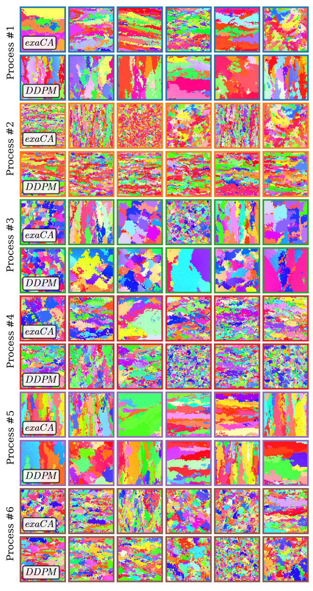
图12｜六种工艺类别下，参考组织与生成组织的对照；不同类别中的晶粒形态和取向模式得到保留。
给定六种工艺类别之一，模型能生成相应的柱状或等轴倾向、条带和织构模式。作者还为每一类生成 10,000 个样本，用图像特征分布距离 FID 比较两组组织；FID 越低，说明生成集与参考集的特征分布越接近。六类曲线大多在 w≈2 附近取得较好结果，继续提高引导强度反而使组织特征偏离参考分布。
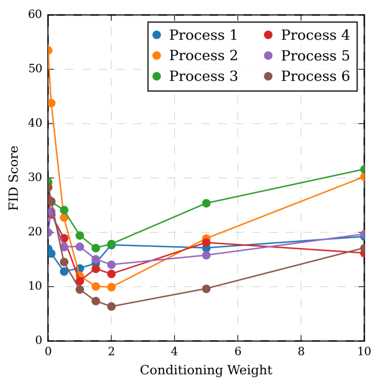
图13｜六类工艺的 FID 随引导权重变化。适中的引导使生成分布更接近目标，最强引导并非最佳。
四、把条件交叉组合，能否提出新的组织
为了检验模型是否能超出原有配对，作者从验证集中分别挑选五种形貌和五种织构，交叉组成 25 对条件。生成结果总体同时遵循指定形貌与织构，说明模型能够把已学到的结构特征重新组合，提出新的微结构实现。
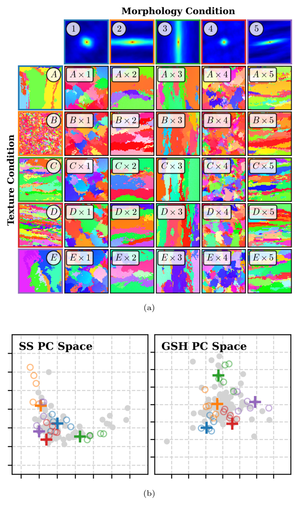
图14｜每列固定形貌、每行固定织构，内部为交叉生成的组织；下方分别比较形貌与织构统计。
作者也交叉组合织构与力学目标。由于两者在训练物理模型中直接关联，某些配对会相互冲突。此时生成结果更倾向遵循织构条件，代理预测的力学性能随生成织构变化，而没有同时达到所有给定性质值。这是作者明确研究的结果：不同条件包含的结构信息量不同，面对冲突时对生成轨迹的影响也不同。
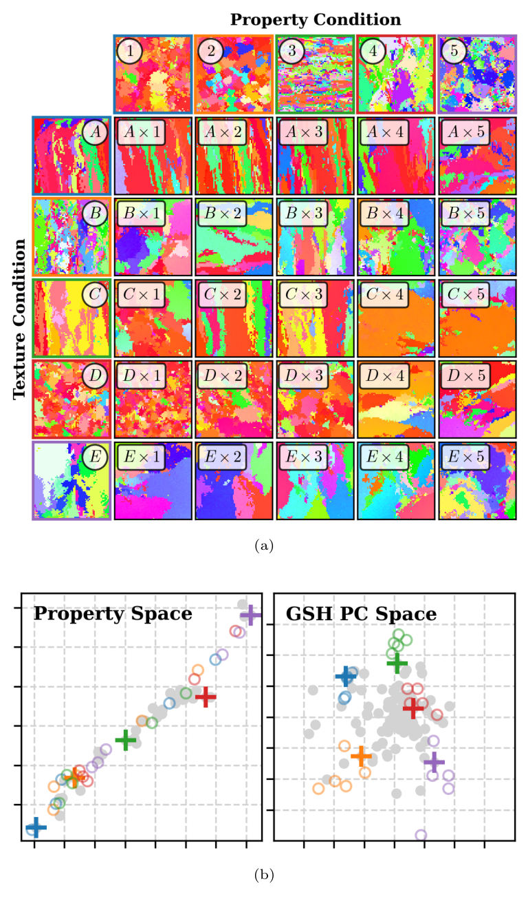
图15｜织构与性质交叉条件下，生成结果更集中于指定织构；性质点未随所有目标组合形成相应聚类。
作者通过比较条件与无条件生成的扩散得分来解释这种偏向。扩散得分描述当前样本向高概率区域移动的方向和强度；按本文的比较方式，形貌条件对去噪的影响最强，其次是工艺和织构，两个整体力学指标的影响较弱。形貌直接给出组织空间模式，而两个性能数值对应许多可能的组织，因此对采样的约束更宽。
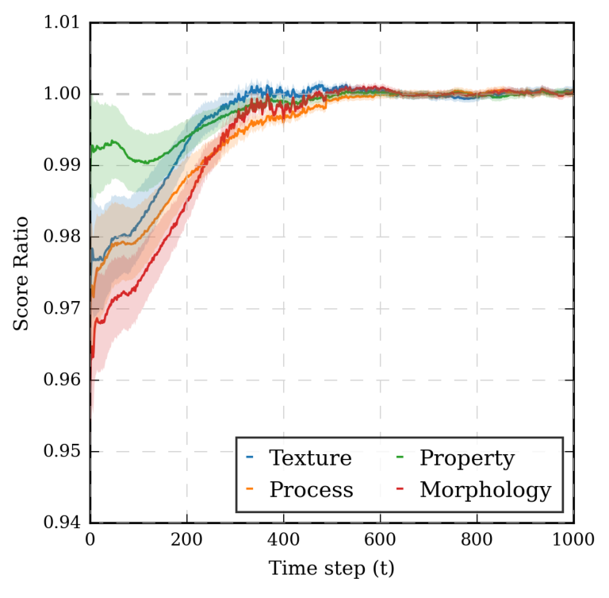
图16｜不同条件相对无条件生成的扩散得分比；结构信息更直接的条件，对去噪路径的影响更明显。
论文同时研究了生成图的晶内小角度取向变化。训练组织在晶粒内部是离散的恒定取向，连续扩散生成却会产生轻微梯度。作者在每个去噪步中反复执行去噪与再加噪，称为重采样，使小的数值偏移得到修正；重采样次数增加到约 5 次时，晶内平均取向偏差的改善趋于平缓。
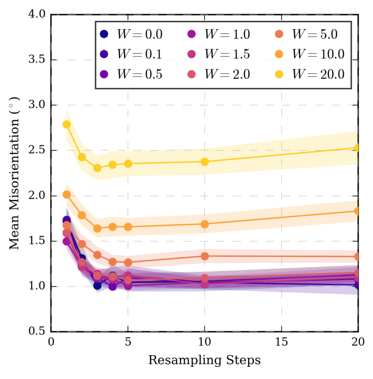
图17｜不同引导权重下，重采样降低晶内平均取向偏差；过强引导会增加偏差。
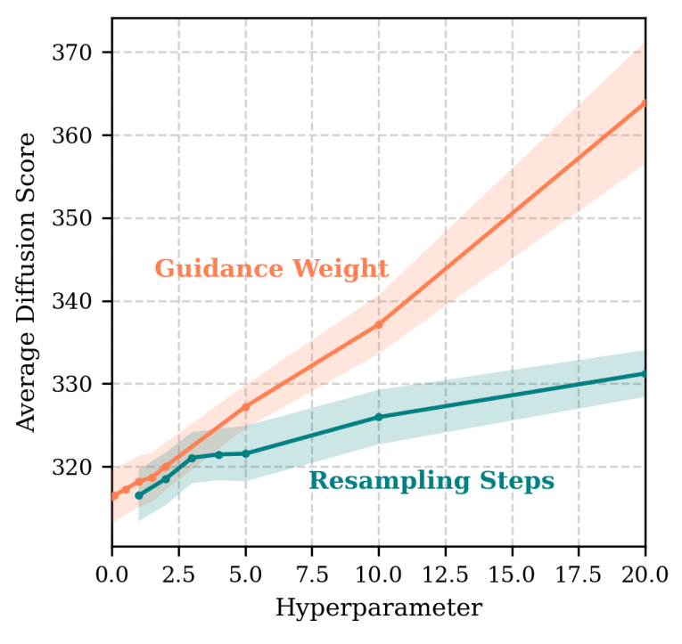
图18｜引导权重与重采样次数都改变去噪过程，需要结合目标匹配和图像质量选择参数。
五、数字孪生的用途：从一个性能预测扩展到一组组织对应的性能分布
数字孪生需要处理的是组织的随机性：同一种织构统计可以对应很多不同晶粒排列。作者固定一个目标织构，在 **w=3、每步不额外重采样（N=1）**的设置下生成 1,000 个组织，再由同一结构—性质代理预测各自模量与屈服强度，并通过核密度估计绘制联合分布。
在这个示例中，模型给出的性能变化约为 191.7±2.9 GPa 的弹性模量、572.8±4.5 MPa 的屈服强度。这组结果展示了如何把“符合某个组织统计的一族样本”转化为“性能可能怎样变化”的分布。作者指出，模量和屈服强度是整体平均量，示例中的离散程度较小；对于更依赖局部晶粒组合的疲劳等问题，组织统计采样具有进一步用途。
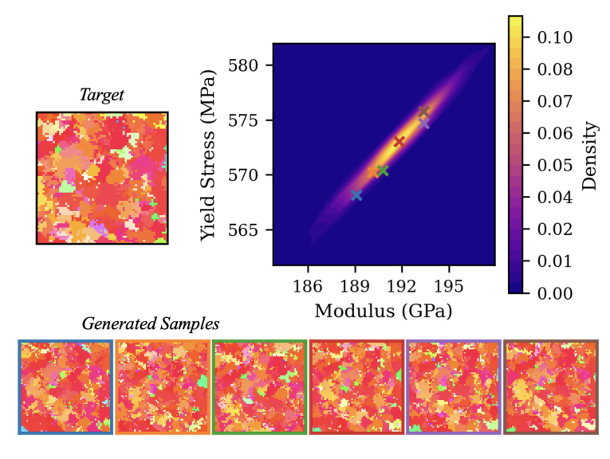
图19｜固定织构生成 1,000 个组织，并由性质代理得到模量—屈服强度联合分布。
这项工作的贡献，是把生成式 AI 接入增材制造数字孪生的微结构环节：从噪声产生含晶粒形状与晶体取向的二维组织表示，允许工艺、统计和性能等不同入口控制它，再把生成的组织分布接到力学分析。它提供了一条可操作的组织采样与逆向设计路线，使计算材料框架能够讨论一族可能组织及其性能，而不只依靠一份确定的组织模型。
原始摘要完整中文翻译
金属增材制造（AM）为复杂结构部件的制造提供了显著优势，但工艺—结构—性能关系的复杂性带来了不确定性与风险，减缓了其广泛采用。仅依靠实验工作流准确量化这些复杂关系，既耗时又昂贵。集成计算材料工程（ICME）框架通过利用晶体塑性有限元模型（CPFEM）等先进计算工具，直接根据微结构数据预测关键力学性能，从而应对这一挑战。然而，这些框架需要通常难以获得的大型数据集，其预测精度也依赖于是否有真实的增材制造微结构表示。生成式深度学习模型为合成具有复杂形貌和晶体学特征的增材制造微结构提供了有希望的方法。其中，去噪扩散概率模型（DDPM）在捕捉增材制造组织的固有复杂性方面展现出很强潜力。在本研究中，我们证明 DDPM 能够可靠地合成用于数字孪生的取向成像显微图，并通过定量证据支持生成样本的保真度。此外，我们建立了无分类器引导框架，用以解决性质到结构、工艺到结构映射等复杂逆问题，并展示了一个与材料鉴定相关的不确定性量化问题中的潜在应用。我们的工作凸显了基于 AI 的生成建模作为计算框架关键组成部分的潜力，有望加速增材制造材料的鉴定与认证。